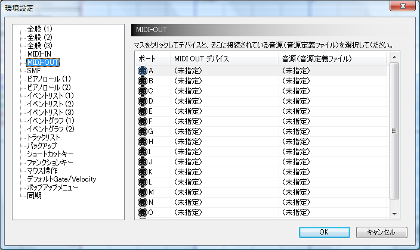
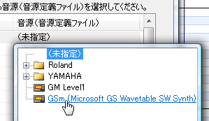
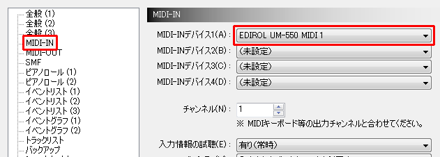

Click the "Preferences" button on the toolbar to open the "Preferences" screen.

Click "MIDI-OUT" on the left to display the current output port settings screen.

For the time being, click the MIDI device part of the A port and select the MIDI device you want to use.

Next, click the "Sound Source Used" part of the A port and select the Sound Source (Sound Source Definition File) connected to the MIDI device you selected earlier.

If you don't have an external sound source and don't know what to set, you can use "Microsoft GS Wavetable Synth" as the MIDI-OUT device for port A and "GSm (Microsoft GS Wavetable SW Synth)" respectively. (Please leave the port B as it is.)
Although it is easy to miss, the sound source "SC-8850" or "GM Level 1" is not automatically attached to the Domino.
* "SC-8850" is a hardware sound source released by Roland.
Product information: http://www.roland.co.jp/products/dtm/SC-8850.html
* "SC-8850" is a hardware sound source released by Roland.
Product information: http://www.roland.co.jp/products/dtm/SC-8850.html
If the Sound Source that you want to use does not exist, you can solve it by following these methods.
- Find the Sound Source Definition File from the collection on the official website.
- Make your own. (refer to "Sound Source Definition File Specifications")
Make a request with the subject "please create the definition file of the sound source"
(If you don't have the sound source, you cannot create it's definition file, so I think it is best to make it yourself.)
If you want to use more than 16 channels, or if you want to use multiple sources at the same time, do the same for ports B and up.
If you have a MIDI keyboard, select "MIDI-IN" on the left and set the MIDI-IN device for that MIDI keyboard.

Preparation is now complete.